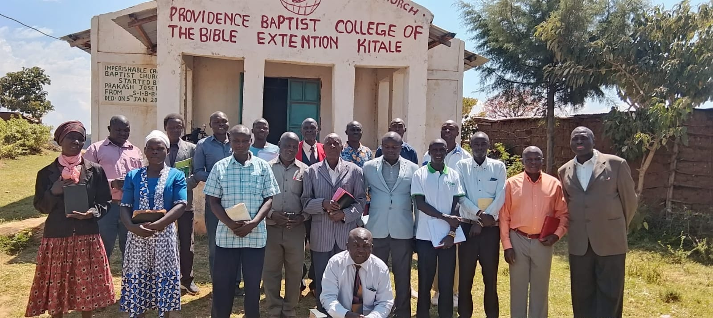

01
Our mission
To live out and share the faith, hope, and love of Jesus Christ.
Learn about the faith, hope, and community at the heart of Imperishable Crown Outreach Baptist Church.
Imperishable Crown Bible Baptist Church was founded in 2020, during the difficult season of the COVID-19 pandemic. Five committed believers continued to meet faithfully, trusting God to open a way forward.
Through prayer, perseverance, and God's grace, the church grew into a warm spiritual family. Today, around 80–100 worshippers gather on Sundays for fellowship, worship, and the teaching of God's Word.
We are a Baptist church serving Kitale, welcoming people from different backgrounds and stages of faith.

To live out and share the faith, hope, and love of Jesus Christ.
To break new ground by using God-given resources and opportunities to reach the unreached with the true Gospel.
Reaching the unreached with the true Gospel.
Our church is shaped by the Bible and the historic Christian faith.
We receive Scripture as God's Word and our guide for faith and life.
There is one God in three persons: Father, Son, and Holy Spirit.
Salvation is by grace through faith in Jesus Christ alone.
The body of Christ, called to worship, fellowship, discipleship, ministry, and mission.
Jesus Christ will return visibly and victoriously to judge the living and the dead.
English, Kiswahili, Luhya, and Kalenjin.
There is room for you in our church family.